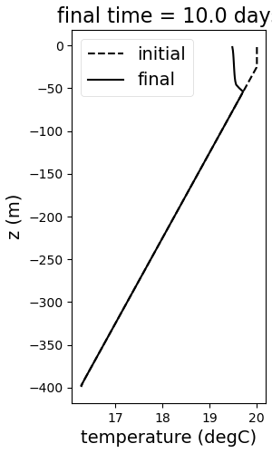
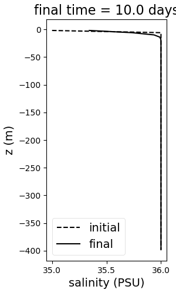
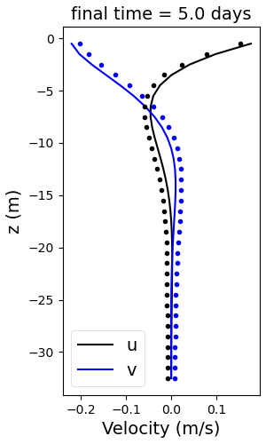
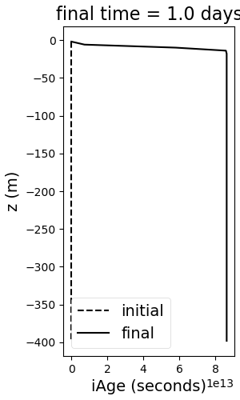
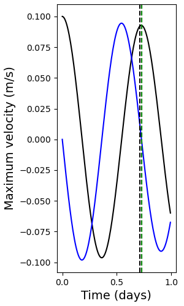

single column
description
The single column tests in polaris.tasks.ocean.single_column exercise
the vertical dynamics of the ocean model only. The test cases are:
Testing the vertical mixing library, CVMix, under surface forcing
Testing the Ekman solution under wind forcing
Testing the Ideal Age tracer under surface forcing
Testing the Coriolis term by quantifying the inertial frequency
Testing K-profile parameterization (KPP) boundary-layer regimes under wind, cooling, evaporation, Langmuir enhancement and sea ice; see KPP regimes.
Comparing Omega’s penetrating-shortwave-radiation scheme against surface-absorbed shortwave heating
Comparing penetrating-shortwave-radiation schemes across Jerlov water types
suppported models
All but the ideal age task support MPAS-Ocean and Omega, whereas the ideal age
task supports MPAS-Ocean only. The shortwave_pen task supports both models.
MPAS-Ocean uses its two-band Jerlov scheme, while Omega runs both an equivalent
configuration and a three-band Manizza configuration.
mesh
The mesh is planar and spans the minimum number of cells (16 for MPAS-Ocean).
The config options lx and ly are given arbitrarily small values of 1 m in
order to ensure that the minimum number of cells is chosen.
By virtue of testing the vertical dynamics, these tests should be insensitive to the horizontal resolution. As such, only 960 m horizontal resolution is currently supported.
vertical grid
Currently, these tests feature a very fine vertical resolution of 4 m with 100 vertical levels.
config options
# Options related to the vertical grid
[vertical_grid]
# the type of vertical grid
grid_type = uniform
# Number of vertical levels
vert_levels = 100
# Depth of the bottom of the ocean
bottom_depth = 400.0
# The type of vertical coordinate (e.g. z-level, z-star)
coord_type = z-star
# Whether to use "partial" or "full", or "None" to not alter the topography
partial_cell_type = None
# The minimum fraction of a layer for partial cells
min_pc_fraction = 0.1
initial conditions
The initial conditions are either stably stratified or uniform. See each task below.
forcing
Default values of no forcing are given here, which are then overwritten by the
config options for various test cases. The rates for surface restoring are also
given here, but are only used when the namelist options in forward.yaml turn
surface restoring on.
# config options for forcing single column testcases
[single_column_forcing]
# Piston velocity to control rate of restoring toward temperature_surface_restoring_value
temperature_piston_velocity = 4.0e-6
# Piston velocity to control rate of restoring toward salinity_surface_restoring_value
salinity_piston_velocity = 4.0e-6
# Temperature to restore towards when surface restoring is turned on
temperature_surface_restoring_value = ${single_column:surface_temperature}
# Salinity to restore towards when surface restoring is turned on
salinity_surface_restoring_value = ${single_column:surface_salinity}
# Rate at which temperature is restored toward the initial condition
temperature_interior_restoring_rate = 1.0e-6
# Rate at which salinity is restored toward the initial condition
salinity_interior_restoring_rate = 1.0e-6
# Net latent heat flux applied when bulk forcing is used. Positive values indicate a net
# input of heat to ocean
latent_heat_flux = 0.0
# Net sensible heat flux applied when bulk forcing is used. Positive values indicate a
# net input of heat to ocean
sensible_heat_flux = 0.0
# Net solar shortwave heat flux applied when bulk forcing is used. Positive values
# indicate a net input of heat to ocean
shortwave_heat_flux = 0.0
# Net surface evaporation when bulk forcing is used. Positive values indicate a net
# input of water to ocean
evaporation_flux = 0.0
# Net surface rain flux when bulk forcing is used. Positive values indicate a net input
# of water to ocean
rain_flux = 0.0
# Net surface river runoff flux when bulk forcing is used. Positive values indicate a net
#flux of water to ocean
river_runoff_flux = 0.0
# Net surface subglacial runoff flux when bulk forcing is used. Positive values indicate a net
#flux of water to ocean
subglacial_runoff_flux = 0.0
# Net surface ice runoff flux when bulk forcing is used. Positive values indicate a net
#flux of water to ocean
ice_runoff_flux = 0.0
# Net iceberg freshwater flux when bulk forcing is used. Positive values indicate a net
#flux of water to ocean
iceberg_flux = 0.0
# Zonal surface wind stress over the domain
wind_stress_zonal = 0.0
# Meridional surface wind stress over the domain
wind_stress_meridional = 0.0
config options
# config options for single column testcases
[single_column]
# size of the domain (typically the minimum allowed size of 4x4 cells)
nx = 4
ny = 4
# resolution in km
resolution = 960.0
# Surface temperature
surface_temperature = 20.0
# Temperature gradient in the mixed layer in degC/m
temperature_gradient_mixed_layer = 0.0
# The temperature below the mixed layer
temperature_difference_across_mixed_layer = 0.0
# Temperature gradient below the mixed layer
temperature_gradient_interior = 0.0
# Depth of the temperature mixed layer
mixed_layer_depth_temperature = 0.0
# Surface salinity
surface_salinity = 35.0
# Salinity gradient in the mixed layer in PSU/m
salinity_gradient_mixed_layer = 0.0
# The salinity below the mixed layer
salinity_difference_across_mixed_layer = 0.0
# Salinity gradient below the mixed layer
salinity_gradient_interior = 0.0
# Depth of the salinity mixed layer
mixed_layer_depth_salinity = 0.0
# coriolis parameter
coriolis_parameter = 1.0e-4
See mesh section for a description of lx and ly and initial conditions section for a description of the remaining config options.
time step and run duration
The time step is given as 10 min and the barotropic time step is 30s in
forward.yaml. The run duration is given in the forward.yaml file for each
test case. Both can be changed after set-up by modifying the namelist file.
cores
Both default and minimum number of cores are hard-coded as 1 given that the domain is only 16 cells.
vmix stable
description
The vmix_stable test runs a series of forward steps with different namelist
paramters to test out different vertical mixing options under stable
stratification. The analysis step then compares the boundary layer depth for the forward step without Coriolis with the analytic solution from equation 35 of Van Roekel et al. (2018) https://doi.org/10.1029/2018MS001336
The temperature and salinity profiles after 10 days are shown here:




mesh
See single column.
vertical grid
See single column.
initial conditions
The temperature and salinity profiles are defined using the following equations:
where \(\Phi_0 = \)surface_X, \({d\Phi/dz}_{ML} = \)X_gradient_mixed_layer,
\(z_{MLD} = -\)mixed_layer_depth_X, \({\Delta\Phi}_{ML} = \)
X_difference_across_mixed_layer, and \({d\Phi/dz}_{int} = \)
X_gradient_interior. X in the config options above is either temperature
or salinity.
The initial velocity is vertically uniform and given by
single_column:zonal_velocity and single_column:meridional_velocity, which
are 0 by default (at rest).
The Coriolis parameter is spatially constant and set equal to
coriolis_parameter.
These config options overwrite those in single column:
# config options for single column testcases
[single_column]
# Temperature gradient below the mixed layer
temperature_gradient_interior = 0.01
# Depth of the temperature mixed layer
mixed_layer_depth_temperature = 25.0
# The salinity below the mixed layer
salinity_difference_across_mixed_layer = 1.0
forcing
# config options for forcing single column testcases
[single_column_forcing]
# Net latent heat flux applied when bulk forcing is used. Positive values indicate a net
# input of heat to ocean
latent_heat_flux = -50.0
# Net sensible heat flux applied when bulk forcing is used. Positive values indicate a
# net input of heat to ocean
sensible_heat_flux = -25.0
# Net solar shortwave heat flux applied when bulk forcing is used. Positive values
# indicate a net input of heat to ocean
shortwave_heat_flux = 200.0
# Net surface evaporation when bulk forcing is used. Positive values indicate a net
# input of water to ocean
evaporation_flux = 6.5E-4
# Zonal surface wind stress over the domain
wind_stress_zonal = 0.1
The cvmix case has both surface forcing and restoring, which are controlled by the config options given in single column.
time step and run duration
The time step is given in single column. The run duration is 10 days.
config options
See forcing and initial conditions.
cores
See single column.
ekman
description
The ekman test compares the modeled Ekman boundary layer with a wind-forced
analytic solution
The modeled and analytic solutions for MPAS-Ocean with the default settings are:


mesh
See single column.
vertical grid
The vertical extent is chosen so that the bottom of the domain is below O(10) Ekman depths.
[vertical_grid]
# Bottom depth
bottom_depth = 100.
The rest of the vertical grid features follow single column.
initial conditions
The temperature and salinity are constant and the flow is at rest.
forcing
The only forcing is surface wind stress, which is controlled by the following config option:
# config options for forcing single column testcases
[single_column_forcing]
# Zonal surface wind stress over the domain
wind_stress_zonal = 0.1
time step and run duration
The time step is given in single column. The run duration is 5 days.
config options
[single_column_ekman]
The only config option specific to this test case is a constant vertical viscosity:
# Constant vertical eddy diffusivity
vertical_viscosity = 1.e-3
All other config options derive from single column and forcing.
cores
See single column.
ideal age
The ideal age test exercises the ideal age tracers.
description
Temperature and salinity profiles evolve in the same way as in the vmix stable test case. 10-day profiles for the ideal age tracer are as follows:


mesh
See single column.
vertical grid
See single column.
initial conditions
idealAgeTracers is initialized as zero seconds throughout the water column.
See initial conditions.
forcing
idealAgeTracers is set to zero seconds within the first surface grid layer at
every time step.
time step and run duration
The time step is given in single column. The run duration is 10 days.
config options
See single column. Currently, config options are only given in the shared framework.
cores
See single column.
inertial
description
The inertial test compares the modeled inertial frequency with the
exact inertial frequency.
The case should be configured to have the lowest possible friction.
The modeled velocity time series for MPAS-Ocean with the default settings is:


where the black vertical line shows the modeled period and the green vertical line shows the theoretical solution.
mesh
See single column.
vertical grid
See single column.
initial conditions
The temperature, salinity, and velocity are constant.
# config options for single column testcases
[single_column]
# Initial zonal velocity
zonal_velocity = 0.1
All other config options are given by single column.
forcing
N/A
time step and run duration
The time step is given in single column. The run duration is 10 days.
config options
The config option specific to this test case is the condition for failure:
[single_column_inertial]
# The fractional difference in inertial period that is tolerated before the test case fails
period_tolerance_fraction = 0.05
All config options shown in single column are also used.
cores
See single column.
KPP regimes
description
The nine kpp_* tasks exercise boundary-layer depth (BLD), vertical mixing
coefficients and non-local tracer transport. Most compare the SimpleShapes
and MatchBoth matching methods; kpp_langmuir instead compares Langmuir
enhancement enabled and disabled. These are controlled column experiments,
not coupled wave or sea-ice simulations.
The wind, cooling, combined forcing, evaporation and mixed-layer cases are adapted from the forcing and profiles in Tables 3 and 4 of Van Roekel et al. (2018). The mixed-layer profile is an approximation, and the grid and equations of state differ from the published experiments. Langmuir, sea-ice and non-local suppression are targeted regression cases. The strong-cooling case is motivated by the six-hour experiment attributed to Wagner et al. (2024) in the forcing configuration.
supported models
All nine tasks support MPAS-Ocean and Omega. Omega uses TEOS-10; MPAS-Ocean
uses Jackett–McDougall (jm), its available nonlinear equation of state.
Identical forcing does not imply bit-for-bit matching tracer or BLD output.
mesh
All regimes share a periodic 4-by-4 planar hexagonal mesh, initially at rest.
The inherited single_column:resolution is 960 km. The purpose is a
horizontally uniform column, not a horizontally resolved ocean experiment.
Horizontal and vertical advection, pressure-gradient forcing and explicit
bottom drag are disabled. Coriolis is retained except in kpp_wind.
vertical grid
The default is 80layerE3SMv1 cropped at the interface nearest 200 m, with
that final interface set to exactly 200 m. The named grid determines the
number of layers: the current default generates 27 layers, not 80 or
200. It retains the upper-ocean spacing of the original approximately
5550 m-deep reference grid rather than rescaling every layer to 200 m.
Choosing grid_type = uniform instead makes vert_levels control the count.
initial conditions
The profiles follow initial conditions, with surface temperature 20 degrees Celsius, surface salinity 35 and zero velocity. Here, \(z\) is negative below the surface: a positive temperature gradient means temperature decreases downward, and a negative salinity gradient means salinity increases downward. The initializer sets the top-layer tracer values to the prescribed surface values.
forcing
Heat fluxes are in W/m² and are positive into the ocean. Freshwater mass
fluxes are in kg/m²/s and are positive into the ocean; evaporation is
negative and increases surface salinity. Wind stress is in Pa.
Only the nonzero components listed for each regime below are applied;
surface and interior tracer restoring are disabled. Langmuir enhancement
is disabled except in the enabled variant of kpp_langmuir.
time step and run duration
The timestep is 600 s. Most regimes run for eight days and first write output after one hour, then hourly. Strong cooling runs for 36 timesteps (six hours), first writing after 600 s and then every timestep. Output record zero is the first evolved state, not the initial condition.
config options
The common overrides in kpp_regimes/kpp_regimes.cfg are:
[vertical_grid]
grid_type = 80layerE3SMv1
vert_levels = 200
bottom_depth = 200.0
[single_column]
run_duration = 8.
output_interval = 3600.
[ocean]
energy_conservation_tolerance = 1.e-6
salt_conservation_tolerance = 1.e-10
Profile options belong to [single_column] and forcing options to
[single_column_forcing]; the case descriptions below specify their
overrides. The timestep is single_column:time_step. The six-hour duration
is selected in the strong-cooling task constructor and takes precedence
over run_duration.
cores
All regimes use one MPI rank and one OpenMP thread, with one rank minimum.
output and interpretation
Each task includes init, two KPP forward steps, viz and analysis.
Ordinary cases write to forward_no_vadv_no_hadv_simpleshapes/output.nc
and forward_no_vadv_no_hadv_matchboth/output.nc. Langmuir uses the
simpleshapes step for the disabled variant and
forward_no_vadv_no_hadv_simpleshapes_langmuir/output.nc for the enabled one.
kpp_combined and kpp_cooling_with_mixedlayer also include
forward_no_vadv_no_hadv_no_kpp/output.nc, a control with the same initial
state, forcing and timing. KPP and non-local transport are disabled, while
background diffusion, convective adjustment and local shear mixing remain
enabled. Its visualization adds no_kpp_vertDiffTopOfCell_time_depth.png
and no_kpp_vertViscTopOfCell_time_depth.png. The control is excluded from
the BLD plot and KPP-specific analysis because KPP’s depth diagnostic is
not meaningful when the scheme is disabled.
The visualization includes BLD time series and time-depth plots of bulk Richardson number, diffusivity, viscosity and non-local flux when available. The analysis logs physical signatures and warnings; these warnings are not quantitative pass/fail criteria. Inspect property-check results as well as task status; a completed task alone is not evidence of matching physics. Implementation and validation details are in KPP regimes.
kpp_wind
Description: wind-only boundary-layer evolution, based on the WNF (wind without Coriolis) experiment in Van Roekel et al. (2018).
Initial conditions: temperature_gradient_interior = 0.05 degrees
Celsius/m; uniform salinity. This is the inherited strong-stratification
profile, not a neutral column. [coriolis] type = zero.
Forcing: wind_stress_zonal = 0.1; no heat or freshwater forcing.
Expected response: mechanical mixing redistributes temperature and deepens the boundary layer. Analysis compares BLD near day one with the wind-driven scaling using diagnosed stratification. Uniform salinity should remain uniform apart from numerical error.
Mesh, vertical grid, timestep, duration, cores: shared KPP settings above.
kpp_convection_cooling
Description: free convection under cooling (FC), using the weak temperature-stratified profile A from Van Roekel et al. (2018).
Initial conditions: temperature_gradient_interior = 0.01; uniform
salinity, with no prescribed mixed layer.
Forcing: sensible_heat_flux = -75.0.
Expected response: surface cooling, BLD growth and nonzero non-local transport. Analysis reports the F11 free-convection trajectory comparison; this is a diagnostic rather than a required error tolerance.
Mesh, vertical grid, timestep, duration, cores: shared KPP settings above.
kpp_combined
Description: combined cooling, evaporation and wind (CEW) forcing, adapted from Van Roekel et al. (2018).
Initial conditions: temperature_gradient_interior = 0.01; uniform
salinity, with no prescribed mixed layer.
Forcing: wind_stress_zonal = 0.1, sensible_heat_flux = -75.0 and
evaporation_flux = -1.5856e-5 (approximately 1.37 mm/day freshwater loss).
Expected response: mechanical and convective mixing, surface cooling and salinification, with active non-local transport. It need not be deeper than every wind-only case, whose stratification and Coriolis differ. The forward property checks cover mass and salt, but not energy.
Mesh, vertical grid, timestep, duration, cores: shared KPP settings above.
kpp_non_local_flux_suppression
Description: regression test that stabilizing surface buoyancy forcing suppresses non-local transport without disabling background diffusion.
Initial conditions: temperature_gradient_interior = 0.05; uniform
salinity.
Forcing: sensible_heat_flux = 125.0; latent heat, shortwave,
evaporation and wind stress are zero. Non-penetrative heating avoids the
different shortwave treatment in the two models.
Expected response: surface warming and approximately zero non-local flux, with background mixing remaining active. Small BLD changes are allowed: suppression does not require a perfectly constant BLD. The forward property checks currently cover mass and salt only.
Mesh, vertical grid, timestep, duration, cores: shared KPP settings above.
kpp_langmuir
Description: paired runs isolating Langmuir enhancement from otherwise identical wind and cooling forcing.
Initial conditions: temperature_gradient_interior = 0.05; uniform
salinity.
Forcing: wind_stress_zonal = 0.1, wind_speed_10m = 8.0,
latent_heat_flux = -150.0 and sensible_heat_flux = -75.0.
Total prescribed heat loss is 225 W/m²; there is no evaporation.
Expected response: the enabled run should deepen the BLD, or at least
not shoal it, relative to the disabled run. MPAS-Ocean uses LWF16 mixing
and LF17 entrainment with theory-wave estimates in the enabled run;
both options are NONE in the disabled run. Omega toggles
UseLangmuirTurbulence. Both runs use SimpleShapes.
Mesh, vertical grid, timestep, duration, cores: shared KPP settings above.
kpp_sea_ice
Description: exercise the minimum boundary-layer depth under a prescribed sea-ice fraction. No evolving sea-ice model is involved.
Initial conditions: temperature_gradient_interior = 0.05; uniform
salinity.
Forcing: wind_stress_zonal = 0.1, ice_fraction = 0.5; no heat or
freshwater flux. The forward steps set the minimum BLD under ice to 30 m.
Expected response: BLD at least 30 m once diagnosed. This is a lower bound, not a requirement that BLD remain exactly 30 m. Langmuir enhancement is disabled in both matching variants; this case alone does not isolate the ice-dependent Langmuir suppression switch.
Mesh, vertical grid, timestep, duration, cores: shared KPP settings above.
kpp_convection_evaporation
Description: salinity-driven convection, using profile B from Van Roekel et al. (2018).
Initial conditions: uniform temperature,
salinity_gradient_interior = -0.007813; no prescribed mixed layer.
Forcing: evaporation_flux = -1.5856e-5; no imposed heat or wind flux.
Expected response: freshwater loss salinifies the surface and drives boundary-layer deepening with non-local transport. The current F11 helper uses temperature stratification only, so its zero-stratification result is not a valid analytic reference for this case.
Mesh, vertical grid, timestep, duration, cores: shared KPP settings above.
kpp_cooling_with_mixedlayer
Description: cooling an existing mixed layer (FCML), approximating profile C from Van Roekel et al. (2018).
Initial conditions: both mixed-layer depths are 25 m. Below them,
temperature_gradient_interior = 0.01 and
salinity_gradient_interior = -0.03. The initializer does not reproduce
the published finite-width halocline.
Forcing: sensible_heat_flux = -75.0.
Expected response: cooling and entrainment into the stratified interior, with non-local transport. The zero-initial-mixed-layer F11 formula is not an exact solution for this configuration.
Mesh, vertical grid, timestep, duration, cores: shared KPP settings above.
kpp_strong_convection_cooling
Description: strongly forced, short free-convection experiment, motivated by the KPP profile behavior discussed by Wagner et al. (2024).
Initial conditions: temperature_gradient_interior = 0.01; uniform
salinity.
Forcing: sensible_heat_flux = -2000.0.
Expected response: rapid surface cooling and BLD growth. Analysis also looks for remaining positive buoyancy frequency; its current check uses a column-wide maximum, so it does not by itself prove stable stratification inside the boundary layer.
Mesh, vertical grid, cores: shared KPP settings above. Timestep and duration: 600 s, 36 timesteps (six hours), output every step.
thermo
description
The thermo test verifies that the ocean model conserves mass, heat and salt
under surface thermodynamic forcing. It performs a separate forward run of 3
time steps, with output written every time step,
for each supported surface forcing variable, applying a single nonzero forcing
value per run so that each forcing term is exercised in isolation.
Conservation is checked between the initial condition and the first time step
in the output file, and again between the last two time steps. The
analysis step then compares, for each run, the change in the column-integrated
content of mass, heat and salt against the surface forcing flux accumulated
over the run. For a budget driven by a nonzero flux the error is measured
relative to that accumulated flux; for a budget with no expected flux the
residual is compared against
single_column_thermo:conservation_error_tolerance times the initial total
column content. The test fails if any checked budget’s error exceeds that
tolerance.
Because the freshwater mass fluxes (rain, river runoff, snow and ice runoff) also carry an enthalpy heat flux that depends on the evolving surface state, the heat budget is skipped for those runs; their mass (and, where applicable, salt) budgets are still checked.
mesh
See single column.
vertical grid
See single column.
initial conditions
The temperature profile follows stable.cfg and salinity is constant with
depth. See single column.
forcing
Each run applies a single nonzero surface forcing variable from the
[single_column_forcing] section (for example latent_heat_flux,
evaporation_flux or sea_ice_salinity_flux). The values used by this test
override the defaults in single column.
time step and run duration
The time step is given in single column. The run duration is 10 days.
config options
The config option specific to this test case is the conservation tolerance:
[single_column_thermo]
# Relative tolerance for the conservation check. The analysis step compares
# the accumulated surface forcing flux of mass, heat and salt against the
# change in the column-integrated content over the run. For a budget driven by
# a nonzero flux the error is relative to that accumulated flux; for a budget
# with no expected flux the residual is compared against this tolerance times
# the initial total column content. The check fails if any budget's error
# exceeds this value.
conservation_error_tolerance = 1e-10
All config options shown in single column are also used.
cores
See single column.
shortwave_pen
description
The shortwave_pen task runs three-hour forward simulations for the selected
Jerlov water types (types I, IB and III by default). MPAS-Ocean uses its
two-band Jerlov scheme. Omega runs a Jerlov-equivalent configuration and a
three-band Manizza configuration with distinct red and blue extinction
coefficients. All runs use the same constant incident shortwave flux.
The Roman numerals identify Jerlov water types. The numeric water_types
options select these types using the IDs in the MPAS-Ocean Jerlov table:
ID |
Jerlov water type |
|---|---|
1 |
I |
2 |
IA |
3 |
IB |
4 |
II |
5 |
III |
The two-band optical parameterization and Jerlov water type designations follow Paulson and Simpson (1977), “Irradiance Measurements in the Upper Ocean”.
Each forward step uses the shared conservation checks to compare the change in
column energy with the incident shortwave energy. The analysis step checks that
the potential-energy increase is larger for clearer water, which deposits heat
deeper in the column. The viz step produces temperature profiles, temperature
anomalies and analytic absorption-fraction profiles. A run from the other
model can be overlaid by setting reference_output_dir.
mesh
See single column.
vertical grid
See single column.
initial conditions
The temperature profile follows stable.cfg and salinity is constant with
depth. See single column.
forcing
A constant incident surface shortwave heat flux is applied in every forward run, overriding the default in single column:
# config options for forcing single column testcases
[single_column_forcing]
# Constant incident surface shortwave heat flux applied to every forward
# run [W/m^2]. Positive values indicate a net input of heat to the ocean.
short_wave_heat_flux = 200.0
Omega reads the extinction-coefficient forcing files produced by the
extinction steps. MPAS-Ocean reads the Jerlov coefficients from its model
configuration.
time step and run duration
The time step is given in single column. The run duration is three hours, and output is written every 600 s, overriding the multi-day defaults in single column:
[single_column]
# Run duration in days (3 hours)
run_duration = 0.125
# Output interval in seconds
output_interval = 600.
config options
# config options for the shortwave_pen single-column task
[single_column_shortwave_pen]
# Red-band extinction coefficient for the type-I Manizza run [1/m]. Other
# water types scale this value to preserve the red/blue ratio.
extinction_coeff_red = 0.35
# Blue-band extinction coefficient for the type-I Manizza run [1/m]
extinction_coeff_blue = 0.03
# Jerlov water types to run: I, IB and III
water_types = 1, 3, 5
# Omega Manizza band parameters
near_ir_fraction = 0.58
near_ir_coeff = 2.86
red_fraction = 0.21
blue_fraction = 0.21
# Work directory from the other model, used for optional viz overlays
reference_output_dir =
For the Jerlov-equivalent Omega runs, the parameters are mapped from the MPAS-Ocean Jerlov table as follows:
Parameter |
Value |
|---|---|
|
|
|
|
|
|
|
|
The red and blue fractions retain the Manizza ratio while summing to the
Jerlov visible fraction. MPAS-Ocean enables
config_enable_shortwave_energy_fixer so the residual below its 200 m optical
cutoff is deposited in the bottom layer.
All other config options shown in single column are also used.
cores
See single column.